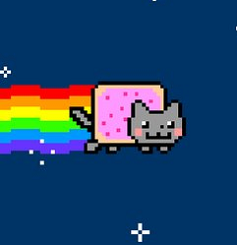
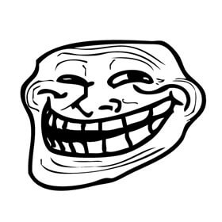

Qual é a principal difusora de memes brasileiros? Twitter Memeland Memeguy South America memes Chaves é um seriado de enorme sucesso no Brasil, e não poderia deixar de ser um meme. Qual é o meme mais conhecido relacionado à chaves? Seu madruga will go on Chaves Chavão Chaves e seu barril Seu madruga professor Os memes atingiram também a indústria musical, lançando para o mundo gêneros como o Funk e o "V A P O R W A V E". Que música representa o gênero vaporwave sendo um dos maiores memes da internet? Home-Ressonance SAINT PEPSI - ENJOY YOURSELF Vektroid - macintosh plus Bag Raiders - Shooting Stars Animais sempre são alvos de milhões de views, mas no início da era dos memes, um gato músico roubou a cena, que gato era esse? Sax Cat Keyboard Cat Guitar Cat Singer Cat Qual é o nome do meme a seguir?  Rainbow Road Star Nyan Dog Nyan Cat Na internet, surgiram expressões como "Rick rolled", que seria uma espécie de "você foi trollado". Que música foi responsável por emplacar essa expressão ao ser tocada em vídeos com clickbaits? George Michael - Careless Whisper Queen - I Want To Break Free Berlin - Take My Breathe Away Rick Astley - Never Gonna Give You Up Qual é o nome desse meme?  Forever Alone Fuck Yeah Troll Face Me gusta Qual é o modelo de faca manuseado pelo mestre das facas? Faca mp9 Faca ak47 Faca de cozinha Faca de pão Quando alguém faz um comentário ou postagem ruim, as pessoas cotumam responder com a imagem de um super-herói hospitalizado, provavelmente com câncer para indicar o mal que o comentário/postagem fez. Que super-herói é esse? Batman Sr Incrível Homem-aranha Thor Quem é o responsável pelo meme do esporro nos alunos de direito? Gugu Liberato Professor Gilmar Professor seu Madruga Professor Utônium Enviar Clique para ver o gabarito